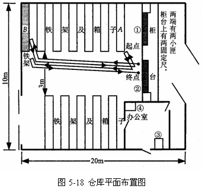
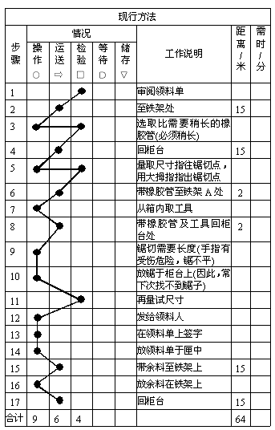
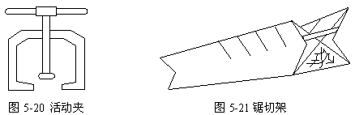
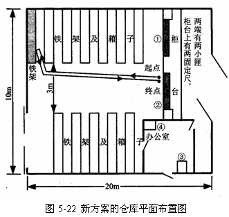
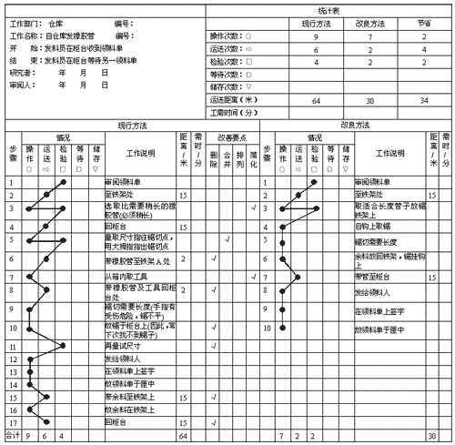
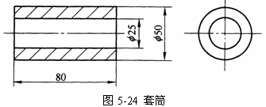
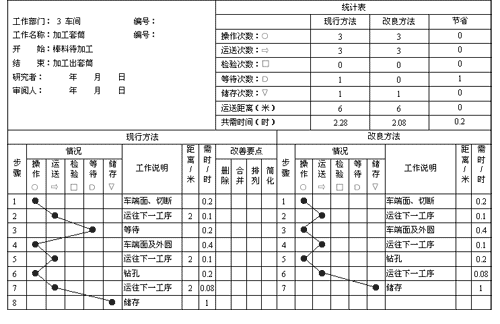

流程程序图实例分析
进行流程程序图分析时，必须采用程序分析的基本步骤进行。
例如：按照程序分析的步骤，对仓库领、发料工作进行改进。
(1)选择。以仓库发料作为改进对象。
某厂仓库每日供应全厂六个车间的物料与零件。新任仓库主任发现，领料甚为拥挤，且需等待较长时间。由于领料发生迟延将影响全厂工作，决定改善。他与两位发料员商量后得到他们的支持。
(2)记录。如实记录现行的仓库领、发料工作。
仓库的平面布置，如图5-18所示，领料人从最右的大门进入至柜台处，在柜台内侧有两支lm长的固定尺。在柜台两端各有一小匣作储放已发料之领料单。仓库内部均设铁架，存放各种大小物料及零件。在仓库最后面的铁架台，为堆放铜管、铁管及橡胶管用。柜台后面铁架A，存放锯子。图中①和②代表发料员，③管理员，④仓库主管。

以发橡胶管为例，记录实际发料情况。
工作开始为发料员②审阅领料单(查看要领之物料或零件的名称、规格、数量及主管是否均签章)。这里以领

图5-19 现行方法的仓库领发料流程程序图
(3)分析，采用提问技术逐项提问。
首先对操作提问。第一个操作是步骤3，现对步骤3操作提问：
问：做什么? (首先提问操作动作)是否必要?为什么?
答：选取比需要稍长的橡胶管是必要的。因为怕将来在柜台上量时不够长，故必选稍长的橡胶管。
问：有无其他更合适的方法?
答：可能有。
问：何处做? (即在什么地方锯?)为何需此处做? (即为什么要在柜台上锯?)
答：在柜台上锯。因为锯子在附近，柜台上有固定尺，柜台平面可作锯台之用。
问：有无其他更合适的地方?
答：如能在存放管子的铁架处锯，则可节省来回的行走。
问：何时做? (什么时候锯?)
答：差不多是在整个发料工作时间的一半时锯的，即走了大约
问：为何需此时锯?
答：因为他要在到后面铁架上取橡胶管，又要取锯子，最后才能放到柜台上锯。
问：有无其他更合适的时间来锯?
答：拟可在最初于铁架选取管子时锯或事先锯好最常用的各种尺寸的管子。
问：由什么人来锯?
答：由发料员来锯。
问：为何由发料员锯?
答：仓库没有其他人。
问：有无其他更合适的人来锯?
答：有一个专门锯切的工作的人最好。
问：如何做?他是如何锯的?
答：用左手握住管子，用拇指压住管子锯切的地方下锯。
问：为何要如此锯?
答：因锯切过程中，并无任何可以夹持的住管子的东西。
问：有无其他更合适的办法锯?
答：如能使用一个简单的夹具来夹住管子，则即可保持锯缝平整，又可不致锯伤手指。
现对第5步骤的检验进行提问：
问：完成了什么?
答：锯切点已找出来，并用拇指按住。
问：是否必要?
答：必要。
问：为什么?
答：因为这样可以保证锯出所需的长度。
问：有无其他更好的办法?
答：如果仓库储存所需长度的管子，则此动作可取消。
问：何处做?
答：在柜台上做。
问：为何要在此做?
答：因为尺是固定在柜台的边缘上。
问：有无其他更合适的地方?
答：有，在最后面铁架B处。
问：何时做?
答：在柜台与铁架间行走约
问：为什么要在那时侯?
答：因为尺在柜台上，所以必须将管子带到柜台处时才可做。
问：有无其他更合适的时间做?
答：有，如果在选择管子时做，则不需带管子到柜台前。
问：由谁做?
答：发料员。
问：为什么需此人做?
答：因为他的工作就是发料。
问：有无其他更合适的人?
答：找有锯切经验的人来做更好。
问：如何做?
答：将管子平放在尺上，使其一端位于尺的起点，再移动左手待指到所需的尺寸即用拇指按住锯切处。
问：为什么要这样做?
答：因为一向如此。
问：有无其他更合适的方法?
答：如有一专用夹具更好。
如果对步骤11即第4个检验提问，则有：
问：完成了什么?
答：管子已按其需要的尺寸锯好，现在再来量取其尺寸。
问：是否有必要?
答：无此必要，因为在锯前已量好。而此种锯切精度要求又不高。故本步可取消。
对以上提问和回答进行分析、归纳、整理得出以下三种改进意见。
1)取消锯切，即仓库不需锯切。要求仓库储存一定长短的管子。要做到这点必须先知道各种需用的正确尺寸。但这样必出现材料浪费。
2)减少锯切，或让锯工来锯，或早一些锯。要求仓库请专门锯工是不可能的。
3)安全而又较容易的锯切。即在铁架B处锯切与选管同时进行。在铁架处量长度采用安全可靠的夹具。
根据程序分析四大原则，进行取消、合并、重排、简化工作。
对于“仓库不需锯切”的意见：储存生产中所需长度的管子，如果产品不固定时很难做到，仓库专门有一位锯工来锯料也不需要。
将“减少锯切”与“安全而又较容易地锯切”合并起来考虑：在铁架B处适当高度的地方上刻上刻度，以

(4)建立新方法
经过按提问技术的分析，并经程序分析四大原则，得到了一个新方案，经与原方法比较，在新方法中，发料员根据领料单走到铁架B处取橡胶管，只要在铁架上刻度处比一比，即可取得所需的长度。然后在锯切架处安全而容易地完成锯切。
新方案的仓库平面布置如图5-22，新方法的流程程序图如图5-23。
由图上统计，新方法节省了2个操作，2个检验，4个运送，路程缩短


图5-23 新方案的仓库领发料流程程序图
(5)实施新方案
书写实施新方案的建议书，建议书的内容包括改进方案的效益、可节省的工时及费用、所需设备及措施、新设备的成本等。待领导批准后即可实施。
例如：套筒的结构简图如图5-24所示，套筒的加工工艺路线如下：①切断，②运往下一道工序，③等待，④车两端面及外圆，⑤运往下一工序，⑥钻孔，⑦运往下一工序，⑧储存。绘出用φ

1．绘出流程程序图
根据给定的工艺路线，绘出φ

图5-25 套筒加工流程程序图
2．改善效果的评价
通过改善，取消了原来的等待工序，使生产周期从原来的2.28h减少为2.08h，缩短了0.2h。